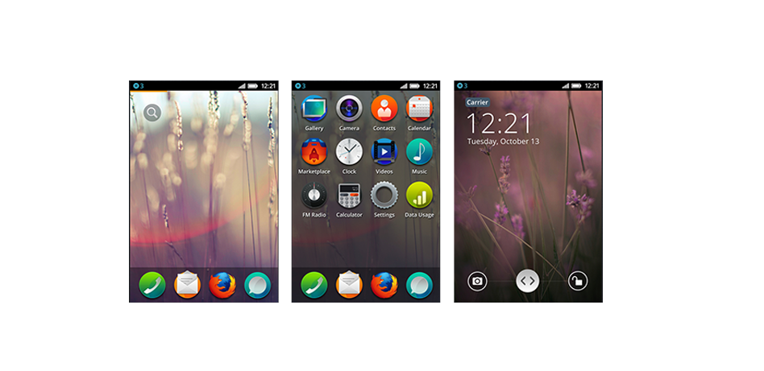
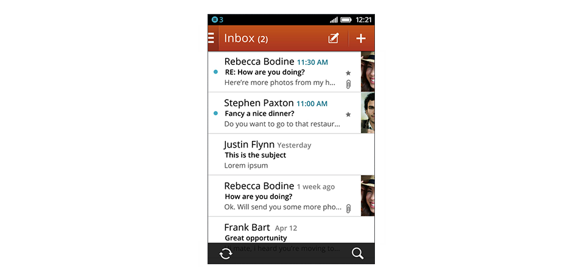
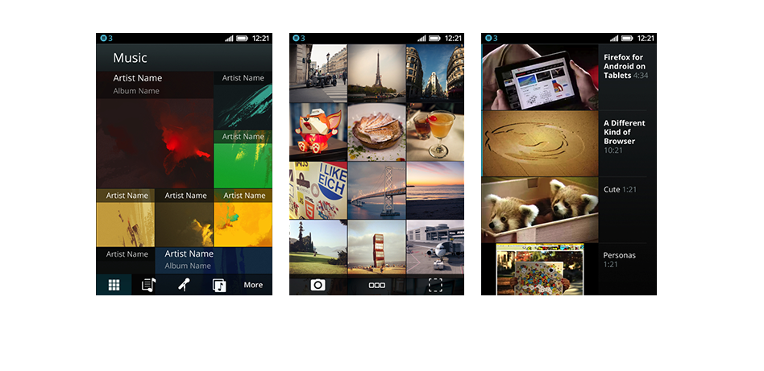
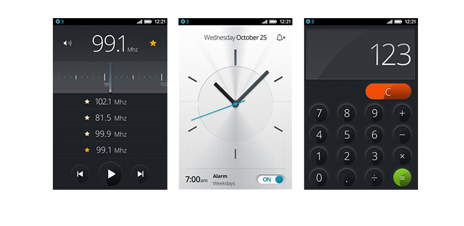
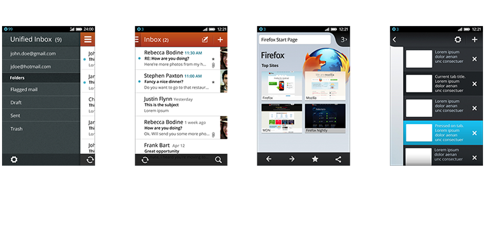
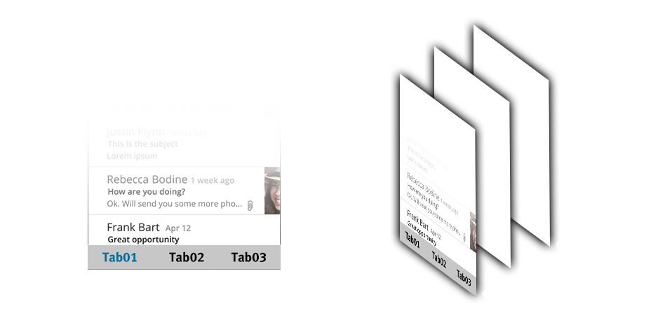

Created by Med Manaî
Mohamed Manai
Web Designer & Developper
Lead Designer @Mozilla Tunisia
FirefoxOS Contributor
Sommaire
Firefox OS Branding
Firefox OS UI
Building Firefox OS
Branding
Boot 2 Gecko ( B2G )

Firefox OS Logo
?
Mobile World
Congress 2013
Firefox OS UI
( Interface utilisateur )
évolution de la UI
Votre Wallpaper
est proche de vous

éléments de base
Design basé
sur l'imagerie
Le contenu est le Roi
Interface réaliste
Techniques
et solutions
Content Layering
Séparer les différents éléments
Gérer chaque élément à part
Faciliter l'intérraction entre les éléments
Flexibilité de l'animation
Content Layering
Menu
Les onglets
Building Firefox OS
T'es pas un designer ?
it's all about code :D
Tout est là
buildingfirefoxos.com
Building Blocks
Une suite d'éléments de l'interface utilisateur
avec leurs code source, pour vous aider à bien présenter votre application
Common Controls
La collection entière des éléments de l'interface utilisateur de Firefox OS dans un seul fichier PSD
( Photoshop Document ) à utiliser ou créer
votre propre UI
CSS Transitions
Pour rendre votre application plus vive, ajoutez des animations et des transitions avec CSS 3